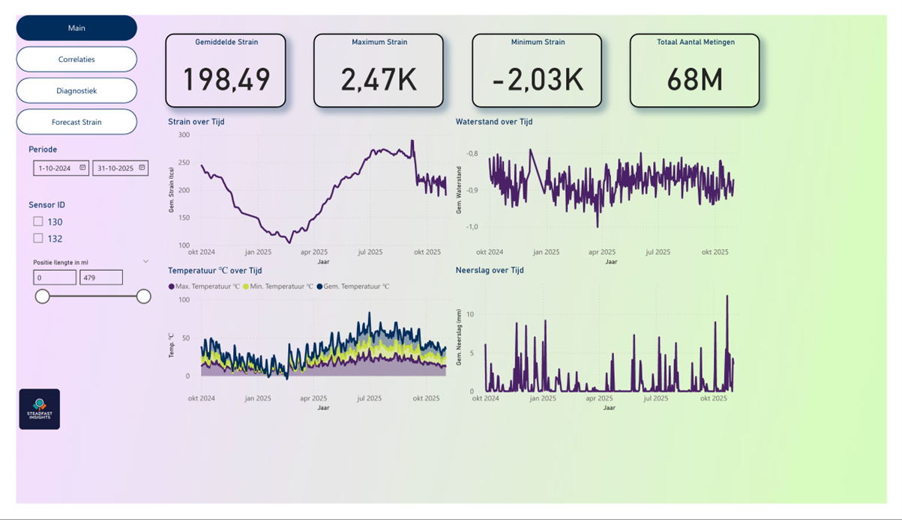
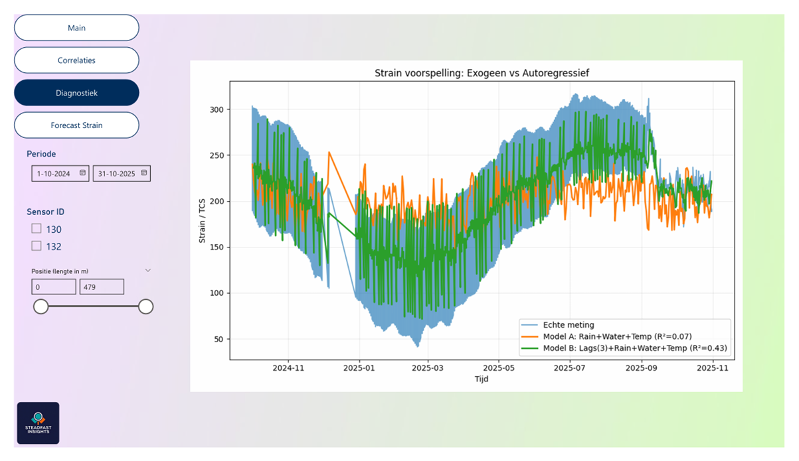
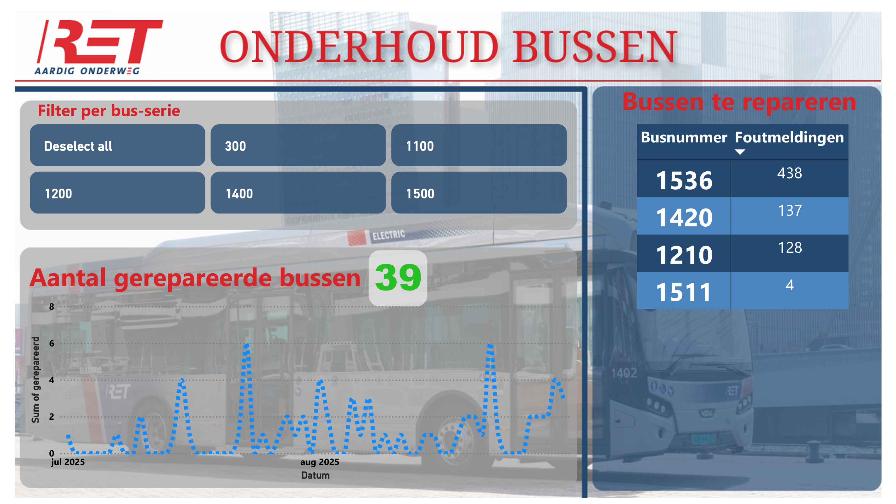
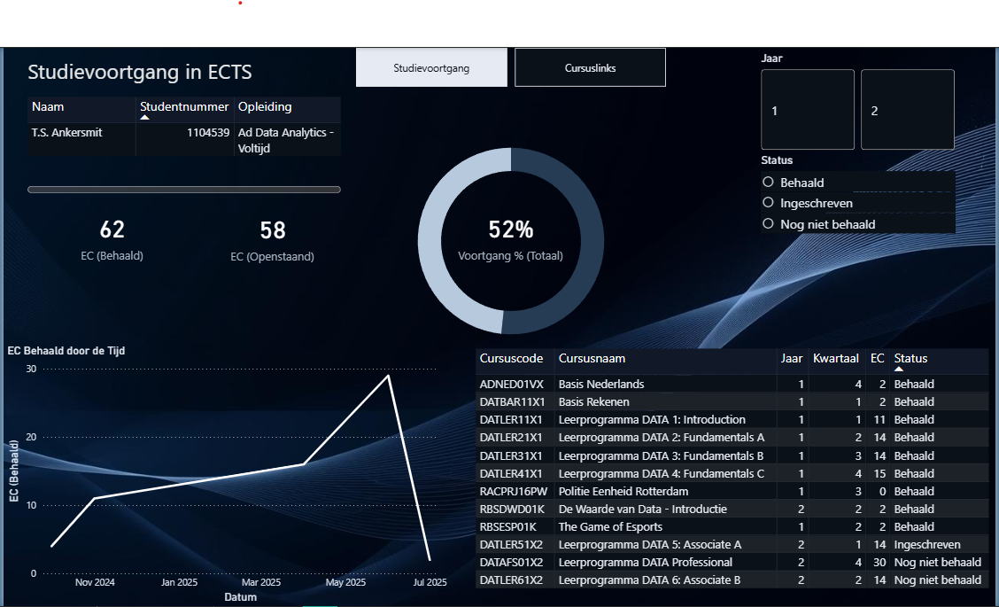

Over mij
Mijn naam is Steven Ankersmit, een data-analist in opleiding aan de Hogeschool Rotterdam. Ik combineer graag mijn analytische denkvermogen met mijn nieuwsgierigheid naar cijfers, zodat ik data kan uitleggen aan iedereen door middel van storytelling. In mijn werk combineer ik structuur met creativiteit: ik probeer tools te bouwen en visualisaties te creëren die iedereen kan begrijpen en gebruiken. Hiervoor gebruik ik onder andere Excel, Python, SQL en Power BI.
Voor mij vormt data-analyse een brug tussen harde cijfers en mensen, tussen wat we kunnen meten en wat er werkelijk toe doet. Tijdens mijn opleiding heb ik geleerd dat een goede data-analist niet alleen getallen begrijpt, maar ook verantwoordelijkheid draagt met betrekking tot het waarborgen van privacy, kwaliteit, en altijd rekening houdt met het ethisch gebruiken van data. Als data-analist in opleiding moet ik verantwoordelijk zijn om niet alleen bereid te zijn te blijven leren, maar ook om verhalen te vertellen die een impact hebben. Klein of groot, een verhaal heeft altijd invloed.
Mijn ambities liggen in het bijdragen aan iets dat voor mij persoonlijk betekenis heeft: ooit zou ik graag werken met NGO’s of politieke bewegingen, organisaties die streven naar maatschappelijke verandering. Maar ik ben realistisch: om een impact te maken wil ik eerst ervaring opdoen, mijn technische en communicatieve vaardigheden versterken, en groeien tot de data-analist die ik wil zijn.
Projecten
Dijk de Keen, Dashboard voor Waterschap Hollandse Delta
Het doel van dit project was om Waterschap Hollandse Delta (WSHD) inzichten te geven in de rekkingen van hun dijk aan de Keen nabij Strijen. De Main pagina van het dashboard laat enkele KPI's zien en geeft een overzicht van de dijkrekking (strain) in combinatie met relevante omgevingsfactoren.
Hieronder zien we in hetzelfde project een verklarend model via Python dat meer inzicht geeft in de verklarende factoren voor de dijkrekking (strain). We kunnen zien dat neerslag, waterstand, en temperatuur gecombineerd met de strain zelf (in lags) in staat is om de hoeveelheid rekking in de dijk te verklaren. Deze pagina laat ook zien dat ik in staat ben om Python te integreren in Power BI Dashboards.
Power BI Dashboard: RET Monteursdashboard
Dit dashboard is het resultaat van een groepsopdracht op de Hogeschool Rotterdam voor RET. Het zorgt ervoor dat de ploegen monteurs en chef werkplaats een makkelijk in te zien overzicht tot hun beschikking hebben, waar zij direct kunnen zien welke bussen kapot zijn en gerepareerd moeten worden. Ook biedt het inzichten in hoeveel bussen er de afgelopen periode(n) zijn gerepareerd. Tenslotte is er een mogelijkheid om te filteren op bus-serie, mochten er prioriteiten worden gesteld vanuit het management.
Power BI Dashboard: Persoonlijk Studievolgsysteem
Dit dashboard brengt mijn studievoortgang in kaart op een visueel aantrekkelijke manier. Het helpt me om overzicht te houden op mijn studie, terwijl ik ook leer om een kleine dataset bij te houden die een directe impact heeft op mijn eigen ontwikkeling als data-analist in opleiding.
